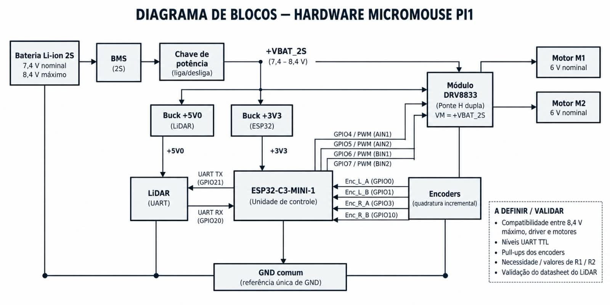
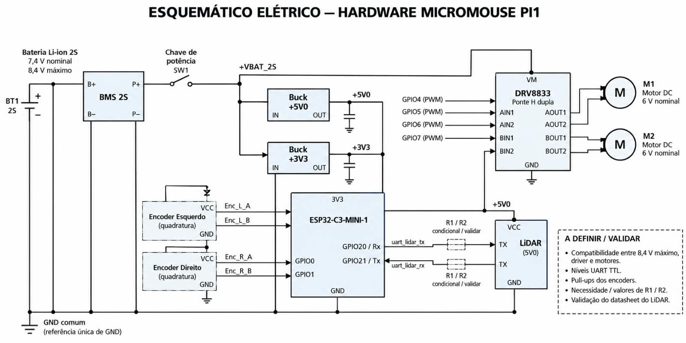

Diagramas de Hardware — Micromouse PI1¶
Esta página apresenta a arquitetura de hardware do Micromouse por meio de dois artefatos complementares: o diagrama de blocos, com a visão geral dos subsistemas e das conexões entre eles, e o esquemático elétrico, com os componentes, símbolos, ligações e pinagem dos dispositivos.
A arquitetura organiza-se em quatro domínios: energia (bateria, proteção e regulação), controle (microcontrolador e driver), atuação (motores) e sensoriamento e comunicação (encoders e LiDAR). O dimensionamento de consumo e a escolha da fonte são detalhados em 4.2 Energia.
1. Diagrama de blocos¶
O diagrama de blocos apresenta a visão geral do hardware, indicando os principais subsistemas e o fluxo de energia e de sinais entre eles.

Fluxo de energia¶
- Bateria Li-ion 2S — 7,4 V nominal e 8,4 V máximo (carga plena).
- BMS (2S) — gerenciamento da bateria: proteção contra subtensão, curto-circuito e balanceamento das células.
- Chave de potência (liga/desliga) — comando geral da alimentação, em série com a saída do BMS.
- Barramento +VBAT_2S (7,4–8,4 V) — distribui a tensão não regulada para os conversores e para o driver de motores.
- Conversor Buck +5V0 — linha regulada de 5,0 V dedicada ao LiDAR.
- Conversor Buck +3V3 — linha regulada de 3,3 V para o ESP32-C3-MINI-1, os encoders e a lógica do DRV8833.
- GND comum — referência única de terra para todo o sistema.
Controle e atuação¶
- ESP32-C3-MINI-1 — unidade de controle, alimentada em +3V3.
- Módulo DRV8833 (ponte H dupla) — recebe
VM = +VBAT_2Sdiretamente do barramento (sem regulador intermediário de 6 V) e aciona os dois motores. Os canais lógicos são comandados por PWM do MCU:GPIO4 → AIN1,GPIO5 → AIN2(Motor M1);GPIO6 → BIN1,GPIO7 → BIN2(Motor M2).
- Motores M1 e M2 — motores DC de 6 V nominal, acionados pelas saídas
AOUT1/AOUT2eBOUT1/BOUT2.
Sensoriamento e comunicação¶
- Encoders (quadratura incremental) — leitura de rotação das rodas via GPIO:
Enc_L_A → GPIO0,Enc_L_B → GPIO1(roda esquerda);Enc_R_A → GPIO3,Enc_R_B → GPIO10(roda direita).
- LiDAR (UART, +5V0) — comunicação serial com o MCU:
UART TX (GPIO21)do ESP32 → recepção do LiDAR;- transmissão do LiDAR →
UART RX (GPIO20)do ESP32, com divisor R1/R2 condicional para adequação de nível, quando necessário.
2. Esquemático elétrico¶
O esquemático elétrico detalha os componentes, os símbolos elétricos, as conexões e a pinagem de cada dispositivo, permitindo a reprodução do circuito.

Alimentação e distribuição¶
- A bateria BT1 (Li-ion 2S) conecta-se ao BMS 2S pelos terminais
B+/B−, com saída protegida emP+/P−. - A chave de potência (SW1) interrompe a linha
P+, gerando o barramento +VBAT_2S. - O barramento +VBAT_2S alimenta, em paralelo, os conversores Buck +5V0 e Buck +3V3 (entradas
IN, saídasOUTcom capacitor de saída) e o pino VM do DRV8833. - Todos os blocos compartilham o GND comum (referência única de GND).
Controle e driver¶
- O ESP32-C3-MINI-1 é alimentado em 3V3 e comanda o DRV8833 (ponte H dupla):
GPIO4 (PWM) → AIN1,GPIO5 (PWM) → AIN2,GPIO6 (PWM) → BIN1,GPIO7 (PWM) → BIN2.- Saídas de potência
AOUT1/AOUT2 → Motor M1eBOUT1/BOUT2 → Motor M2(motores DC de 6 V nominal).
Sensores¶
- Encoder Esquerdo —
Enc_L_AeEnc_L_Bconectados aGPIO0/GPIO1, com alimentaçãoVCCeGND. - Encoder Direito —
Enc_R_AeEnc_R_B, com alimentaçãoVCCeGND. - LiDAR (+5V0) — pinos
TX/RXligados aGPIO20 / RxeGPIO21 / Txdo ESP32, com blocos R1/R2 condicionais nas linhasuart_lidar_txeuart_lidar_rxpara adequação de nível.
3. Pontos a definir / validar¶
Itens críticos sinalizados nos diagramas que dependem de confirmação em bancada e nas folhas de dados:
- Compatibilidade entre os 8,4 V máximos do barramento e os limites do driver e dos motores (nominais de 6 V).
- Níveis UART TTL entre o ESP32-C3 e o LiDAR.
- Necessidade de pull-ups nos encoders.
- Necessidade e valores de R1 / R2 para o divisor do LiDAR.
- Validação do datasheet do LiDAR (protocolo, alimentação e compatibilidade elétrica).
Observação: a proteção dos motores de 6 V sob bateria plena (8,4 V) é tratada por limitação de duty cycle via software no PWM do ESP32-C3, conforme detalhado em 4.2 Energia.